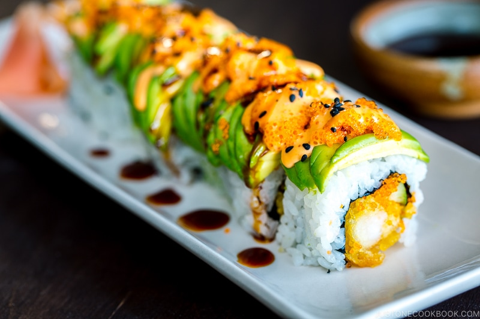

My Favorite Recipie
Dragon Roll (Sushi)
Ingridients
- 8 pcs Shrimp Tempura
- 2 Avocados
- 1 Cucumber
- 2 cups Sushi Rice
- 2 sheets of Nori
- Spicy Mayo
- Unagi Sauce
- Toasted Black Sesame Seeds
- 2 tbsp Tobiko (flying fish roe)
- Grilled Eel (Unagi) (not used in this recipie but is common in dragon rolls)
- 1/4 cup Water
- 2 tsp Rice Vinegar
Instructions
- Gather all the ingredients.
- Cut the cucumber lengthwise into quarters. Remove the seeds and then again cut in half lengthwise into thin strips. You will have 8 strips.
- Cut an avocado in half lengthwise around the pit and twist the two halves until they separate. Use a spoon to remove the pit. Alternatively, you can remove the pit with your knife, but you must take great care not to use too much force or you could cut your hand. First, hold the avocado half in your palm; it's best to hold it with a folded kitchen towel to protect your hand. Next, very gently tap the heel of your knife into the pit with just enough pressure that the knife embeds in the pit. Then, twist the knife and the pit will come out smoothly. Repeat with the remaining avocado.
- Remove the skin and thinly slice the avocado halves crosswise.
- Gently press the avocado slices with your fingers so the individual slices begin to slide and separate. Keep pressing gently and evenly with the side of the knife until the length of the sliced avocado half is about the length of a sushi roll (or a sheet of nori seaweed.) If you don't serve the sushi roll right away, I recommend squeezing lemon over the avocado to prevent discoloration. Repeat with the other avocado halves.
- Line the bamboo mat with plastic wrap and place half of the nori sheet on top, shiny side down. Dip your hands in the tezu (vinegar water) and spread ½ cup sushi rice over the nori sheet.
- Flip over the nori sheet with the rice on it. Place two pieces of the shrimp tempura, two cucumber strips, and some tobiko at the bottom end of the nori sheet closest to you.
- From the bottom end, start rolling the nori sheet over the filling tightly and firmly with the bamboo mat until the bottom edge reaches the nori sheet. Lift the bamboo mat and roll over the remaining nori.
- Place the bamboo mat over the top and tightly squeeze the roll.
- Remove the bamboo mat and plastic wrap from the sushi roll. Using the side of the knife, lift the avocado slices from one half and place them on top of the roll. If you'd like to use unagi, alternate avocado and unagi slices and layer them to cover the top and sides of the roll.
- Replace the plastic wrap over the roll and put the bamboo mat over the top. Tightly squeeze the roll through the bamboo mat until the avocado slices wrap around the roll. Be gentle so you don’t break the avocado slices. Remove the mat.
- Cut the roll through the plastic wrap into 8 pieces with the knife. Clean your knife with a wet towel after each cut. If the roll gets messy while cutting, tightly squeeze the sushi roll again with the bamboo mat. Remove the plastic wrap on top of the sushi and transfer the sushi pieces to a serving plate. Repeat to make the remaining rolls.
- Put some tobiko on each piece of sushi and drizzle spicy mayo and sprinkle black sesame seeds on top. If you'd like, place some unagi sauce on the plate so you can dip the sushi. Enjoy!